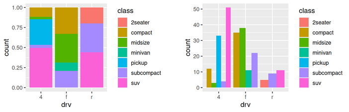

Introducing R and RStudio
EES 4891/5891
Probability & Statistics for Geosciences
Jonathan Gilligan
Class #3: Tuesday, January 14 2025
Learning Goals
Learning Goals
- Get RStudio configured for this course
- Learn about working with R and RStudio
- Import data from a text file into R
- Use R to visualize global temperature data
Announcement
Announcement
- Tomorrow (Wednesday) my office hour will be shortened: 1:30–3:00.
Getting Started with RStudio
Getting Started with RStudio
Set Global Options
Set Global Options
- Configure
gitfor revision control
- Configure
knitrfor generating reproducible research documents
Set Global Options
- Configure code formatting to use “native pipe”
R Packages
R Packages
- There are thousands of free software packages that extend the basic capabilities of R.
- Packages are hosted on a global network of repositories called the Comprehensive R Archive Network (CRAN)
- In this course, we will use a suite of packages called the
tidyverse. - You can install packages into R in two ways:
- Interactively, using the “Packages” tab in RStudio
- Automatically, using R scripts, with the
install.packages()function
Installing Packages for This Course
Installing Packages for This Course
- Install the following packages:
-
credentials(for working with GitHub) -
tidyverse(for managing data) -
janitor(functions to clean up data frames) -
quarto(for reproducible research)
-
-
Alternately:
install.packages( c( "credentials", "tidyverse", "janitor", "quarto" ))
Working with GitHub and GitHub Classroom
Working with GitHub and GitHub Classroom
- Following Reproducible Research practices, we will use tools for
managing code and documents:
gitis software on your computer that integrates with RStudio to manage files on your computer and keep track of the history of changes you make.- GitHub is a website that works with
gitto keep a copy of your local files and their history, in the cloud- GitHub makes it easy to collaborate and share your work
- GitHub also provides safe, reliable storage in case something happens to your computer
- GitHub Classroom is a service of GitHub for distributing and turning in computational assignments.
Connecting RStudio with GitHub
-
The
credentialspackage that you installed helps manage your GitHub login credentials so RStudio can get files from GitHub and save your work to GitHubType the following into the RStudio console:
library(credentials) git_credential_ask()- This will open a browser window where you can log in to GitHub and it will prompt you to connect GitHub to RStudio.
Working with RStudio
Working with RStudio
- RStudio thinks about “projects”:
- All files for a project are in a directory, and possibly sub-directories
- RStudio creates a
.Rprojfile and an.Rproj.userdirectory to help it remember what you were doing, and re-open projects where you left off. - It also creates
-
.RDatato keep track of temporary variables and data you were using -
.Rhistoryto keep track of the R commands you used
-
- RStudio can use
gitto manage projects- Create a project from a project on GitHub
- Update the GitHub project with your local changes
Working with RStudio and GitHub
- RStudio can import projects from GitHub.
- We will import a project from GitHub Classroom
- Go to
https://classroom.github.com/a/SdzYvx3b- You can find the link at the homework assignment for today on the
course website
https://ees5891.jgilligan.org
- You can find the link at the homework assignment for today on the
course website
Accepting an Assignment
Creating an RStudio Project

Creating an RStudio Project

Creating an RStudio Project from GitHub
Working with Data in R
Working with Data in R
- Open the file
hw-01.qmd - Set the editor pane to “Visual” mode
Quarto Notebooks
-
Notebooks mix text with R code
- They can also use Python and other languages
-
Text and graphics output:
Walk Through the Notebook
Grammar of Graphics
Grammar of Graphics
- The heart of data visualization in the Tidyverse is the
ggplot2package.-
ggfrom Leland Wilkinson, The Grammar of Graphics
-
- A graph has a grammar, which can be expressed in terms of 7 layers
- Data
- Geometries: How to draw the data (Lines, points, etc.)
- Aesthetics: How to mapping different dimensions of the data to visual attributes (x & y coordinates, colors, shape, etc.)
Statistical transformations: histograms, smoothing, box-plots, etc.
-
Position adjustments: e.g., side-by-side versus stacked bar charts

Coordinate systems: Cartesian vs. polar, pie charts, etc.
Facets: Breaking a graph into sub-plots.
Grammar of Graphics in R
-
Data is represented as a
data.frame, or a special kind of data frame called atibble(for “Tidy Table”)A
data.frameis like a spreadsheet.Each column represents a different variable (year, month, temperature, rainfall, humidity, etc.)
Each row represents a different measurement of all the variables.
-
Load the global temperature record:
-
To start a graph, specify the data and aesthetics:
-
Next, we add geometries
-
Label coordinates